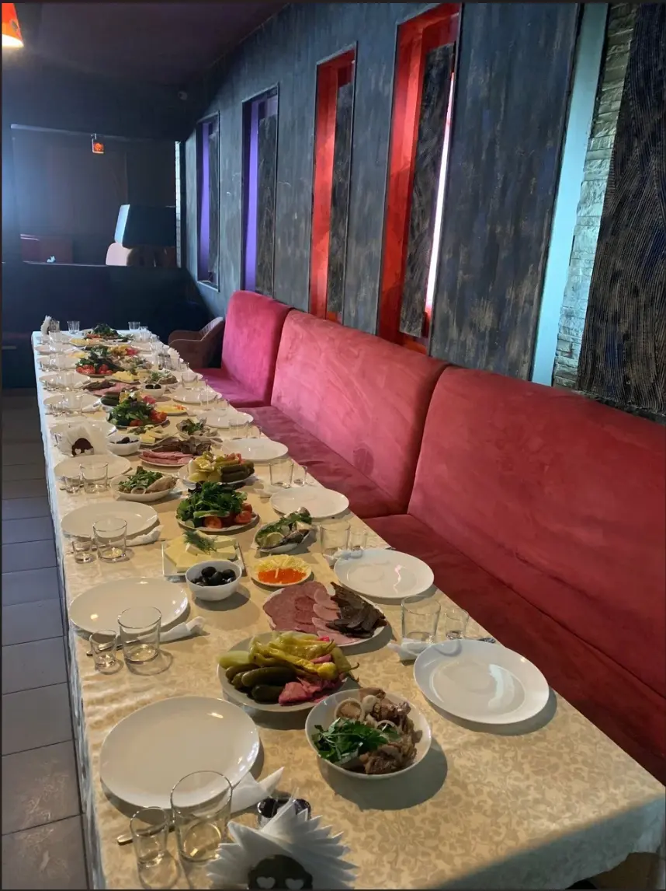
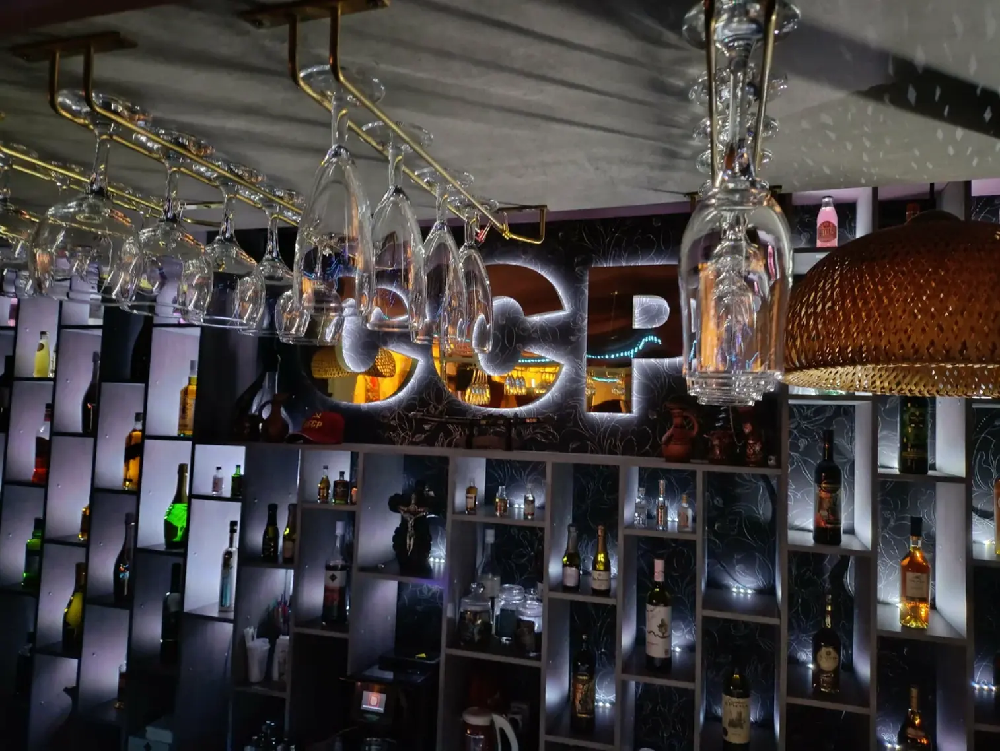

Армянско-кавказская кухня · Балашиха
Горячая кухня
для своих.
Шашлык на углях, хачапури, домашние блюда и большой стол для семьи или компании.


О кафе
Встречаемся за одним столом
В ССР приходят на обед, семейный ужин и встречу с друзьями. В меню есть закуски, горячие блюда, выпечка, шашлык и напитки — можно собрать стол на любую компанию.
Уточнить свободные столыКонтакты
ССР в Балашихе
мкр. Керамик, ул. Керамическая, 16
АдресКерамическая ул., 16Построить маршрут →
Режим работы
Пн — Чт 11:00 — 00:00
Пт 11:00 — 02:00
Сб 13:00 — 02:00
Вс 13:00 — 00:00